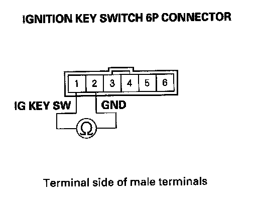
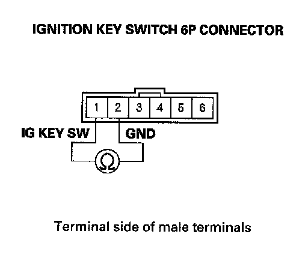
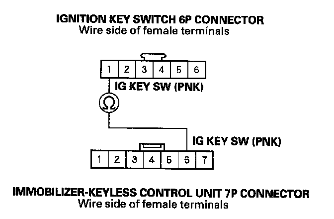
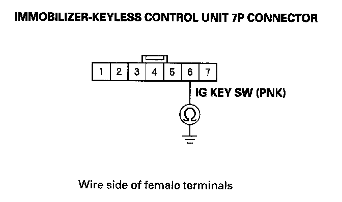

B1925
DTC B1925: Ignition Key Switch Signal ErrorNOTE: If you are troubleshooting multiple DTCs, be sure to follow the instructions in B-CAN System Diagnosis Test Mode A.
1. Clear the DTCs with the HDS.
2. Turn the ignition switch OFF and remove the ignition key.
3. Insert the ignition key into the ignition switch, and turn the ignition switch ON (II).
4. Check for DTCs with the HDS.
Is DTC B1925 indicated?
YES - Go to step 5.
NO - Intermittent failure, the system is OK at this time. Check for loose or poor connections at the immobilizer-keyless control unit 7P connector and at the ignition key switch 6P connector.
5. Turn the ignition switch OFF and remove the ignition key.
6. Disconnect the ignition key switch 6P connector.

7. At the ignition key switch side, check for continuity between the ignition key switch 6P connector No.1 and No.2 terminals.
Is there continuity?
YES - Faulty ignition key switch or short to ground, replace the steering lock assembly.
NO - Go to step 8.
8. Insert the ignition key into the ignition switch.

9. At the ignition key switch side, check for continuity between the ignition key switch 6P connector No.1 and No.2 terminals.
Is there continuity?
YES - Go to step 10.
NO - Faulty ignition key switch, replace the steering lock assembly.
10. Disconnect the immobilizer-keyless control unit 7P connector.

11. Check for continuity between the immobilizer keyless control unit 7P connector No.6 terminal and the ignition key switch 6P connector No.1 terminal.
Is there continuity?
YES - Go to step 12.
NO - Repair an open in the wire.

12. Check for continuity between the immobilizer keyless control unit 7P connector No.6 terminal and body ground.
Is there continuity?
YES - Repair a short to ground in the wire or substitute a known-good under-dash fuse/relay box, and recheck. If the symptom/indication goes away, replace under-dash fuse/relay box.
NO - Replace the immobilizer-keyless control unit.